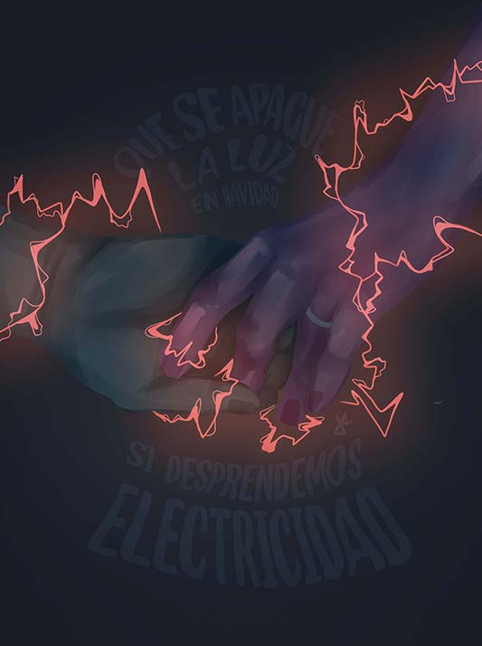

TIROTEO
- Tú y yo, los dos juntito' frente al mar
- Sé por dónde quieres ir a parar
- Aunque mires así no servirá
- Si es que nos entendemos sin hablar
- Muero cuando te vas
- Toco el cielo si estás
- Sentada en mi portal
- Siempre haciéndote esperar
- Y ahora quiero que vuelvas como un niño los finde'
- Desde que te has ido no hacen gracia los chiste'
- Me he cortado el pelo, me he comprado otro tinte
- Buscando a ver si encuentro alguna como tú en Tinde
- Mi niña, eres la prota' de mis canciones tristes
- No pue'o cerrar los ojos mientras te me desviste
- Tú dile a las demás que no me quedan más chicles
- Solo te doy a ti el amor, es así de simple